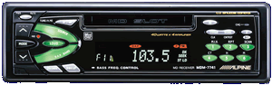

|
 Alpine MDM-7741 Car MD deck reviewJuly 16, 2001 SummaryThis is a nice basic deck, with good MD playback, a fairly intuitive interface and a subdued appearance. It does pretty well as a MD player, and pretty well as a broadcast receiver. It's not really fantastic at anything. Pros:
Cons:
IntroductionI wanted to replace the Concord No-Name Special CD deck that came in my '92 Honda Civic. It had been dropped according to the previous owner (either while removed or during installation), so the display had no backlight, making it impossible to see, and the CD player mechanism could only cope with about 25% of the CDs I tried to play. I had looked on numerous occasions to replace it with either a new CD deck or a new MD deck, since I have a variety of MD gear. CD decks didn't seem worth the bother, and MD decks all seemed too expensive, but after taking a long trip sans music or even any broadcast stations, I couldn't take it any more. I went down to Car Toys to see what they had. Car Toys, in early July 2001, had two MD decks on their walls: a Sony X-Plod model, and the Alpine in question. Their price on the Alpine was shockingly good, at $349 installed. I did some searching around the web, and didn't find anyone selling the deck for less than $350, so I decided to go with the Car Toys deal. The DeckThe deck itself is fairly basic. It has 18 radio memory presets: 12 FM and 6 AM. It's got a 40Wx4 amplifier. Removable faceplate. Single MD capacity, with the ability to control a CD changer. It doesn't look very fancy. In short, it was a good stylistic and budget match for me. The audio it produces is clearer and fuller than the Concord (big surprise there). The MD playback is as flawless as a car deck can reasonably get, although the amount of time necessary to get the disc spinning seems to be longer than I would expect. 40 watts isn't very much in the car audio world, but it seems to put out as much undistorted sound as I ever require. The receiver seems to work very well. I haven't had any chance to really test it with a distant station, but it receives local FM stations with aplomb. The memory system offers something called Direct Access Programming, which seems to allow you to program either AM or FM stations to different buttons in the same "band" -- useful if you have a small handful of stations of different bands that you like to listen to. Using ItThe user interface to this deck is usually intuitive, and can be used without looking, but there are some areas that could have been better designed. Fortunately, those areas are confined to stuff you don't need to be doing while driving -- setting memories, adjusting the bass frequency, setting the clock, etc. The volume control is a pushbutton type. I find the lowest volume settings to be a bit too discrete, with a large gap between "loud enough to hear well" and "loud enough to converse over." The display shows both numerically and with a bargraph what the current volume is, when you press a volume button. There is a mode button in between the two volume buttons, which fortunately always starts at "bass" if you need to adjust settings frequently while driving. (It controls bass, treble, balance, fader, and volume, going from memory.) The station selection buttons for the radio are fairly small, but I still don't seem to have a problem hitting just one with my medium-large fingers (I'm 6' 1" tall and weigh 215 pounds). Unfortunately, they're dual-purpose, selecting some playmode settings for the MD (random play and repeat, notably), and the secondary function is not lit up by the backlight. The buttons which change the display from time, to track, to track name, etc. are dangerously close to the "disc eject" button, and I've accidentally ejected the disc more than once while trying to find the clock display. The deck does have some nice features, in the button area. There's a play/pause switch, so you can pause a disc without having to turn the deck off (thus avoiding that long startup time). There are separate "source" and "band" buttons, so that switching between MD and radio doesn't affect which band the radio's on. The "forward track" and "backward track" buttons will skip to track boundaries or fast-wind through the track if held. The power button doubles as a mute button if you press it quickly. Speaking of quickly, some of the buttons require you to hold them down to access a secondary function -- the period you have to hold them seems prohibitively long to me, at about 3 seconds. This includes the power button to shut the radio off (but turning it on is instantaneous). I suspect most people will rarely turn off the radio, either removing the faceplate or switching to a stopped MD instead. ConclusionFor an overall installed price of $380 plus change, I'm fairly pleased. It does what I want it to do -- plays minidiscs, receives broadcast audio, doesn't have "pretty" features to get in my way -- very well, and is fairly easy to use. I've discovered that it's worthwhile not turning on the radio before starting the car if a disc is playing. With that 3 second pause before it starts playing the disc again, it can get pretty annoying. The deck seems to need that time to spin the disc up every time you switch away from the MD source, whether it be by powering down, switching to the radio, or presumably switching to the CD changer. I find I don't really like having a removable face plate, because I'm now paranoid about leaving it in the car, where with the old stereo, I couldn't have paid a thief to take it. It would have been nice if Alpine had supplied one of the swanky fold-in faceplates with a power-on code like Kenwood is doing with some of their decks. I highly recommend this deck to anyone who's interested in having a good work-horse MD receiver in their car. If you're interested in having the coolest-looking stereo on your block, look elsewhere. (Sony has some crazed-looking stereos that might suit you better.) The Alpine name is highly regarded in car stereos, and their quality appears to be reflected in this unit. The build quality seems high, and I don't have any fear the radio will break any time soon (but I'll post it here if it does). |
Created by Ian Johnston. Questions? Please mail me.